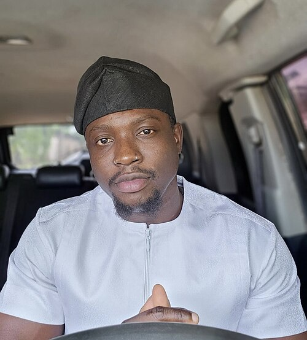
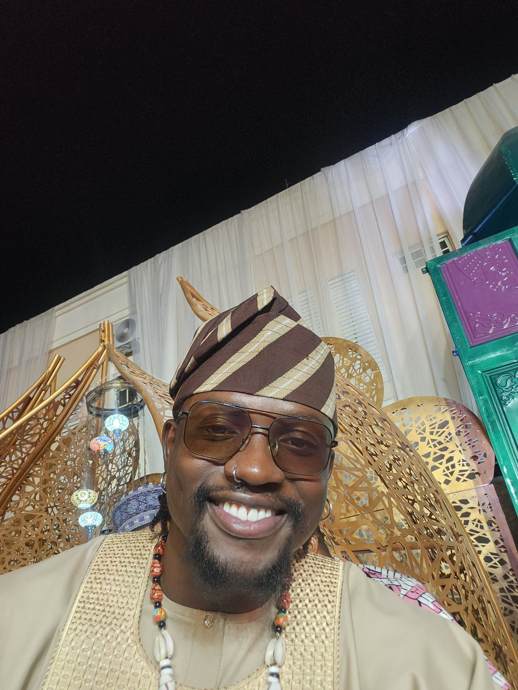
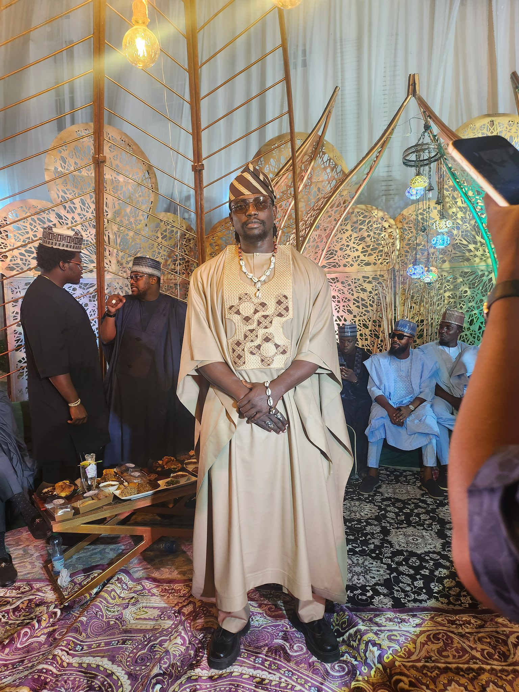
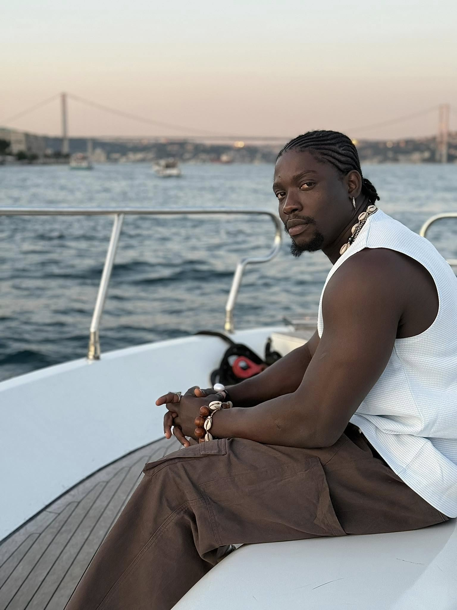
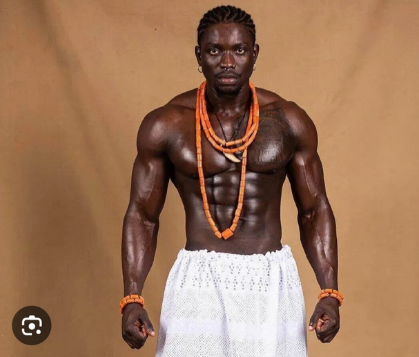

Early life & education
Born on April 8, 1994 in Agenebode, Edo State, Martins Vincent Otse studied Business Administration at the University of Lagos before turning his attention to civic work and public scrutiny.
Public profile
Known as VeryDarkMan / VDM
Known for bold online advocacy, community mobilisation, and a strong stance on public accountability, VDM operates across media, civic causes, and charity platforms.
Portraits





Biography
Born on April 8, 1994 in Agenebode, Edo State, Martins Vincent Otse studied Business Administration at the University of Lagos before turning his attention to civic work and public scrutiny.
VDM built rapid online momentum by engaging in discussions around governance, social justice, and service delivery from 2022 onward.
He positions himself as a watchdog and the "Fourth Arm of Government," focusing on accountability, public advocacy, and support for underserved communities.
The Martins Vincent Otse Initiative (MVOI) and the Ratel Movement anchor his public-facing work, balancing structured humanitarian support with street-level mobilisation.
Advocacy focus
Timeline
Launches digital advocacy profile as VeryDarkMan, drawing attention to public sector performance and civic rights.
Gains national recognition through viral campaigns, exposing alleged corruption and demanding accountability from officials.
Formalises advocacy through the Martins Vincent Otse Initiative (MVOI) while growing the Ratel Movement's citizen-led action network.
Supports major humanitarian initiatives, including substantial donations to NAPTIP and investments in community infrastructure.
Detained and later released on administrative bail after a public protest and legal challenge, drawing attention to citizen dissent and security sector response.
Publishes the first public-facing financial transparency update for MVOI to reinforce accountability and donor trust.
Controversies
VDM faced a high-profile defamation complaint in May 2026 connected to a widely shared social media post. The matter remains part of ongoing discussions about online accountability and influence.
In May 2025, VDM was detained during a protest, then released on administrative bail. The incident highlighted tensions between civic activism and state authorities.
Several public exchanges with other influencers and media personalities have kept the profile in national news, including commentary around Blord, King Mitchy, and media ethics.